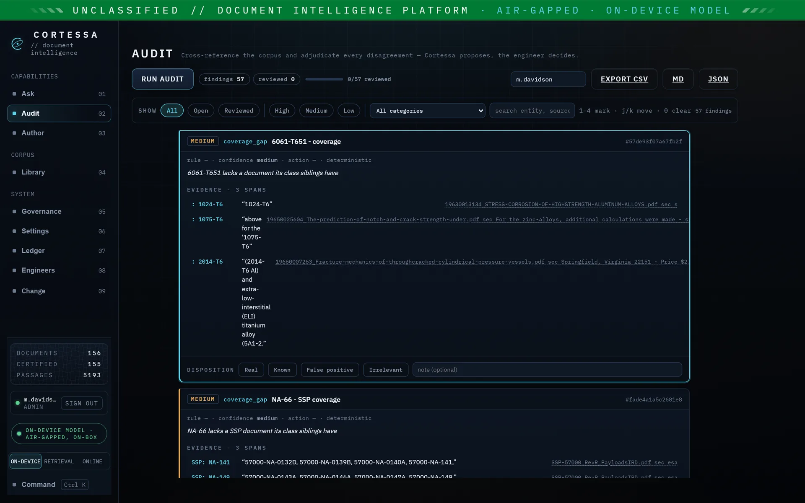

How it works
The gate is enforced in code, not hoped for
Every output Cortessa produces is provenance-gated — labelled Verified, Draft or Refused. The gate is deterministic and never-false-positive: a number or identifier that is not in the source cannot pass as Verified.
The provenance gate
Cortessa does not certify — the engineer signs off. What the gate guarantees is that nothing reaches Verified unless it is provably a near-verbatim span of a cited source.
Shown only when a claim is provably a near-verbatim span of a cited source, with the citation attached.
Claims that cannot be proven against a source are shown as Draft — never passed off as fact.
When the fact is not present in the approved corpus, the system refuses rather than guess.
Why deterministic matters Safety is not a prompt you hope the model obeys — it is enforced in code. In blind testing on real, public documents, all 16 fabrication baits were gated and no ungrounded value reached Verified — 0 fabrications across both blind evaluations.
Pure local retrieval by default
In its default mode, Cortessa answers by retrieving from your approved document set on the machine itself. Nothing leaves the machine to answer a question — no corpus, no query, no fragment of a document. It runs entirely on a dedicated sovereign workstation on the analyst's desk — a single executable: no server, no cloud, no internet dependency.
Because retrieval is local and the gate is deterministic, the same guarantee holds whether the machine is online or disconnected inside an accreditation boundary. The classification ribbon shows, live, which assurance mode is in force.
Three assurance tiers
Three modes, each shown live on a classification ribbon so the operator always knows the boundary they are working within.
- Offline (default) pure local retrieval; nothing leaves the machine to answer.
- In-region cloud optional AI in-region (UK, London / eu-west-2); opt-in and logged.
- On-device optional AI fully on-device; the same gate applies, and nothing leaves the machine. In the independent blind exam this mode refused all 12 out-of-corpus questions with 0 fabrications.
How Ask and Audit work, end to end
Ask — a question, answered and cited
-
Point it at an approved corpus
You choose the document set. Cortessa retrieves only from that corpus — it has no other source of truth.
-
Ask in natural language
Every sentence in the answer is cited back to the source span it came from.
-
The gate labels each claim
Provable spans are Verified; anything unprovable is Draft; if the fact is not present, the answer is Refused rather than invented.
-
The engineer signs off
Cortessa never certifies. You trace each citation and make the call.
~97% retrieval with 0 provenance breaches across a 480-question blind evaluation (all 16 fabrication baits gated; artifacts hash-manifested). Independently, an oracle-authored 60-question blind exam on a real 43-paper physics corpus — the engine never sees the answer key — returned 83% strict accuracy with 12 / 12 out-of-corpus questions refused and 0 fabrications, fully offline. Accuracy is a floor set by interim hardware, not a ceiling of the design.
Audit — the whole estate, cross-checked
-
Load the document estate
Cortessa cross-references the whole corpus rather than answering a single question.
-
Surface where documents disagree
Numeric conflicts, supersession, broken references and stale content are detected across the estate.
-
Return a cited findings list
Each finding points to the sources that disagree — for example a coupling rated to 30 bar where the current standard says 45.
-
An engineer adjudicates
The findings are adjudicable, not automatic. The engineer resolves each one; Cortessa hands over the evidence.
Recall 1.0 and precision 1.0 across four seeded error classes on the committed audit benchmark; on a real NASA programme document family, 15 / 15 genuine findings with 0 false positives. Measured on real, public corpora.

Author is in development A third capability, Author, turns the corpus into a cited, sign-off-ready briefing where the engineer accepts, revises or rejects each drafted claim. It is still in development — additional testing is underway — and is not yet shipped.
Effectivity: binding an answer to a configuration
Supersession and effectivity are different claims. Supersession is about time: Rev E replaced Rev D. Effectivity is about configuration: Rev D still applies to hulls 1–4 and Rev E from hull 5 — both are current at once, and quoting the wrong one for the variant in front of you is a safety event.
For S1000D technical publications, Cortessa evaluates each data module's declared applicability against the product configuration selected for the session. The evaluation is three-valued — applies, does not apply, or undecidable — and undecidable is flagged on the answer, never silently resolved. Modules withheld because they belong to a different variant are reported alongside the answer, so the engineer can see what was excluded and why. With no configuration selected, behaviour is unchanged: nothing is withheld.
0 wrong-variant leaks across the committed effectivity benchmark — eight configuration-scoped questions over a disclosed, purpose-authored S1000D corpus with a genuine pre-/post-modification module pair.
See the gate against your own documents
A scoped, paid pilot runs on your hardware, behind your firewall, against success criteria you set — led by Audit.